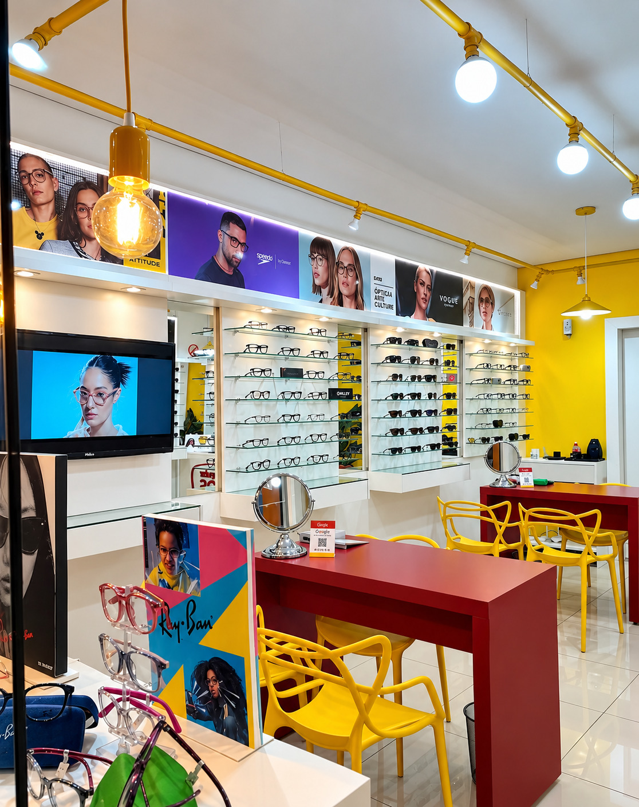

Seu óculos em 1 hora.
Você traz a receita, escolhe a armação e a gente monta na hora. Preço popular, sem espera de dias.
Parcele em até 10x sem juros
Trabalhamos com
- B-live
- Carmim
- Cavalera
- Next
- Cacharel
- Ana Hickmann
- Ray-Ban
- John John Grazi
- Ecko
Da receita ao óculos no rosto, no mesmo dia.
- 1
Traga sua receita
Receita atualizada em mãos. Se precisar, pergunte no WhatsApp antes de vir.
- 2
Escolha a armação
Modelos para todos os estilos e bolsos. A gente ajuda a achar o que combina.
- 3
Montamos na hora
As lentes são cortadas e montadas aqui, enquanto você espera.
- 4
Saia usando
Ajuste final no seu rosto e pronto: você vai embora enxergando bem.
O prazo de 1 hora depende do tipo de lente. Consulte as condições na loja.
Problemas com seu óculos? A gente resolve.
Ajustes
Manutenções
Troca de mola
Traga seu óculos na loja ou chame no WhatsApp.
Falar no WhatsAppArmações de grau e lentes.
Nenhum modelo nesta seleção. Chame no WhatsApp e a gente mostra o que tem na loja.
Armações de exemplo: fotos, nomes e valores reais entram quando forem enviados. Para valores das lentes, chame no WhatsApp.

Ambiente pronto para receber você.
Passe na loja, experimente as armações e converse com a nossa equipe.
Como chegarPerguntas que a gente mais ouve.
Como funciona o "óculos em 1 hora"?
Você traz a receita, escolhe a armação e nós montamos o óculos na hora, aqui na loja. O prazo de 1 hora depende do tipo de lente, então consulte as condições no atendimento.
Preciso levar receita?
Para óculos de grau, sim: traga uma receita atualizada. Se tiver qualquer dúvida sobre a sua, mande uma mensagem no WhatsApp antes de vir.
Posso tirar dúvidas ou mandar minha receita pelo WhatsApp?
Pode. Chame no WhatsApp (51) 98280-0889 e a gente responde.
Vocês fazem ajustes e consertos?
Fazemos ajustes, manutenções e troca de mola. Traga seu óculos na loja ou chame no WhatsApp para saber mais.
Quais marcas vocês trabalham?
B-live, Carmim, Cavalera, Next, Cacharel, Ana Hickmann, Ray-Ban, John John Grazi e Ecko.
Quanto custa? Dá para parcelar?
Parcelamos armações e lentes em até 10x sem juros. Os valores variam conforme a armação e o tipo de lente: chame no WhatsApp ou passe na loja para ver as opções.
Onde fica a loja e qual o horário?
Av. Álvares Cabral, 608, Morada do Vale I, Gravataí, RS. Atendemos de segunda a sexta, das 9h às 19h, e aos sábados, das 9h às 18h.
Não achou sua dúvida? Fale com a gente no WhatsApp.